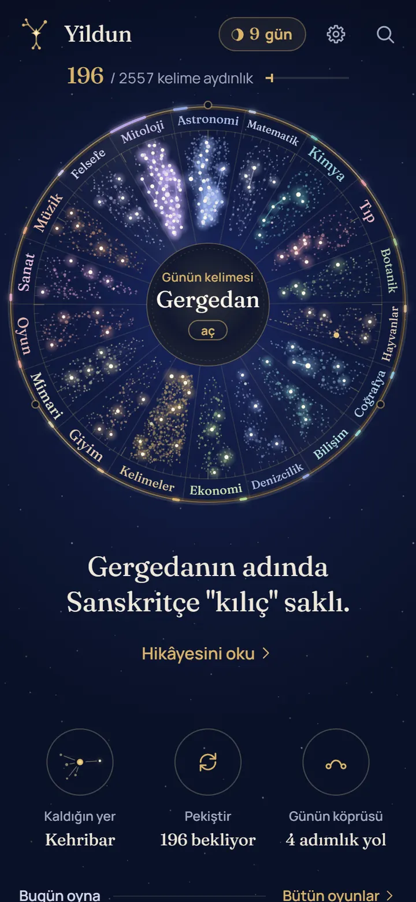
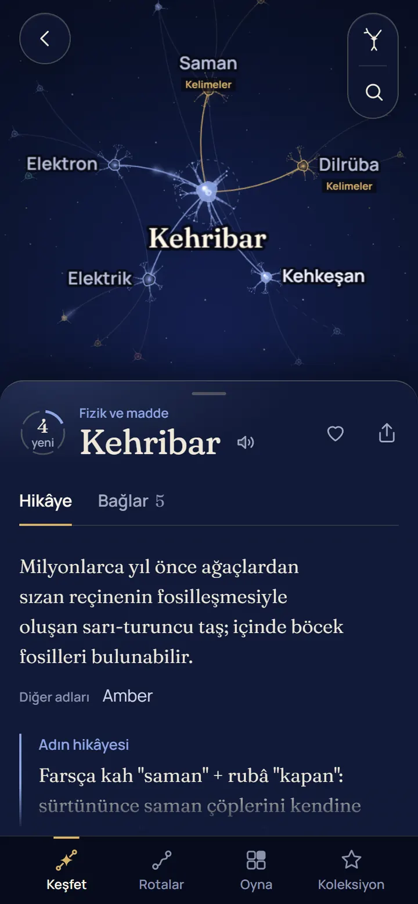
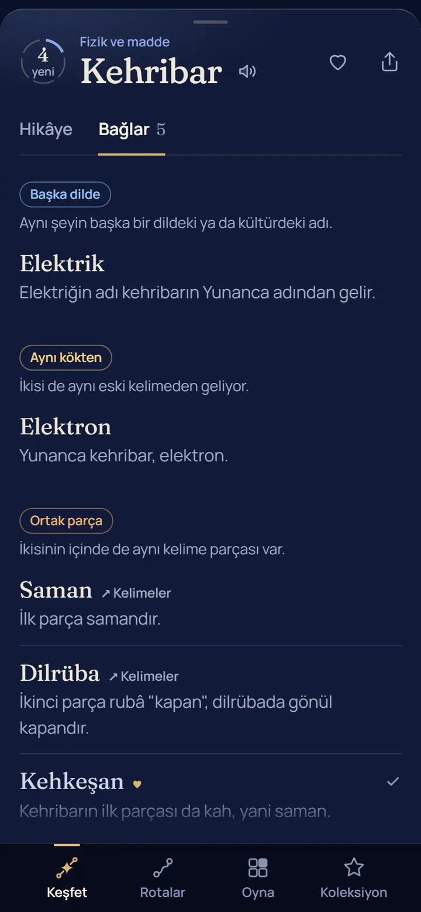
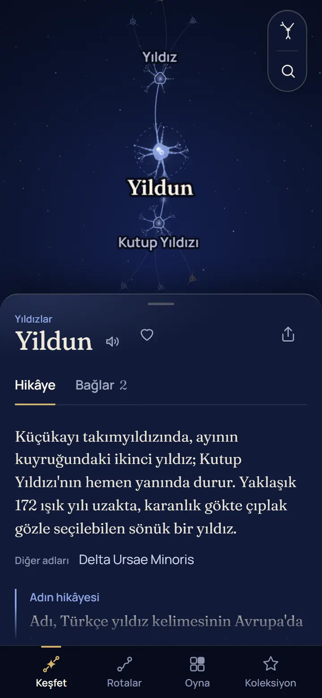
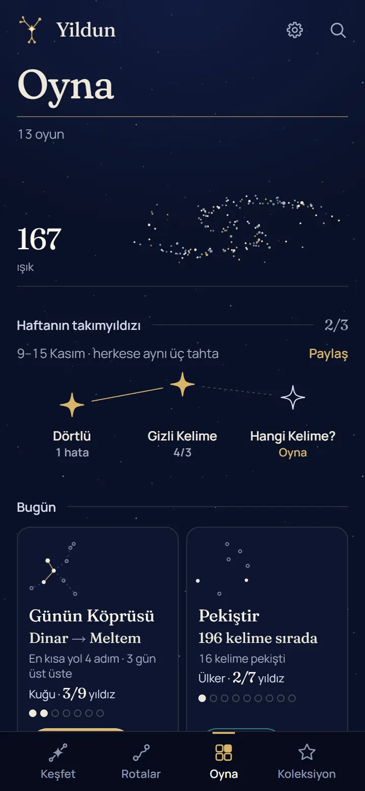
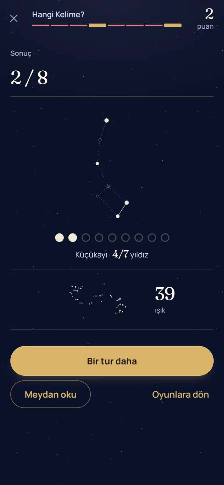
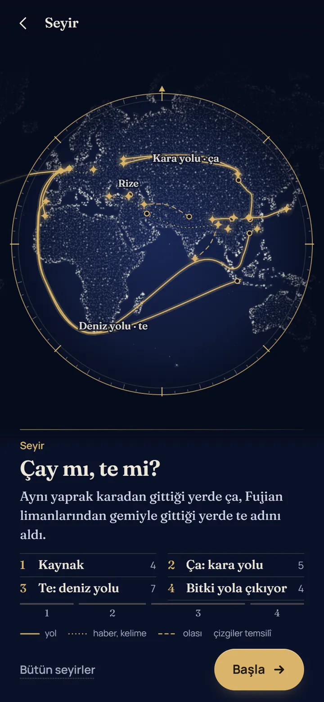
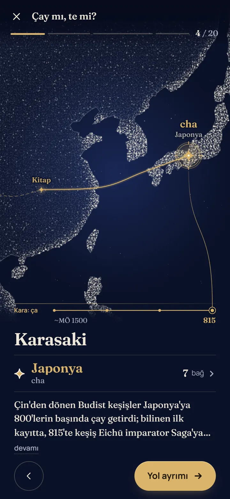
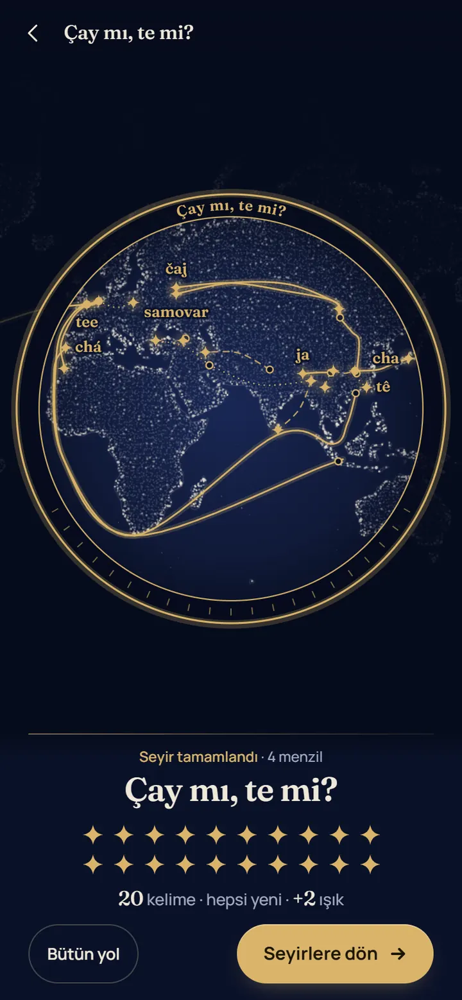

Yildun
Kelimeler nereden gelir, birbirine nasıl bağlanır?
Türkçe. Hesapsız, reklamsız.
Yakında Google Play'de

Bir kelimeden başla.
Bir kelimeye dokun, akrabaları çevresinde açılsın. Her bağın bir cümlelik nedeni var.
Samandan elektriğe, beş kelime
- Adın hikâyesiKehribar, Farsça kah-rubâ: “saman kapan”. Sürtününce saman çöplerini çeker.
- Ortak parçaİlk parça kah, yani saman. Samanyolu’nun eski adı Kehkeşan’da da o var.
- Ortak parçaİkinci parça rubâ, “kapan”. Kehribar samanı kapar, dilrüba gönlü.
- Başka dildeKehribarın Yunanca adı elektron. Elektrik adını oradan aldı.
- Aynı kökten1891’de electric ve ion kelimelerinden kuruldu. Kökü yine Yunanca “kehribar”.
Gökten bir kelime seç.
Ana sayfa bir gök kadranı: her alan bir dilim, her kelime bir yıldız. Birine dokun, ağı açılsın.
2557kelime 5495bağ 72rota 18alan



Oynadıkça yıldız yanar.
Her oyunun gökte bir takımyıldızı var. Biten her tur ışık kazandırır, ışık biriktikçe yıldızlar yanar.
- Günün Köprüsü
- Hangi Kelime?
- Bağı Bil
- Eşleştir
- Harf Avı
- Dörtlü
- Gizli Kelime
- Sıcak Soğuk
- Soy Ağacı
- Tek Yabancı
- Hangi Dilden?
- Pekiştir


Aynı yaprak, iki ad.
Çay karadan gittiği yerde ça, Fujian limanlarından gemiyle gittiği yerde te adını aldı. Seyir, bir kelimenin yolunu harita üstünde durak durak gezdirir.



Seyir, uygulamanın sonraki güncellemesiyle gelecek.
Yildun+
Yildun’u kullanmak için abone olmak gerekmez.
- Ücretsiz
- Astronomi ve Kelimeler alanları, günün kelimesi, oyunlar, Pekiştir.
- Yildun+
- Bütün hikâyeler, Seyir, sınırsız galaksi.
- Yıllıkİlk 7 gün ücretsiz₺799,99/ yıl
- Aylık₺79,99/ ay
Satın alma Google Play’den yapılır. Ayrıntılar abonelik koşullarında.
Adı da bir kelime.
Yildun, Kutup Yıldızı’nın yanındaki sönük bir yıldız. Adı, Türkçe “yıldız”ın Avrupa’da bozulmuş yazımı.
Yakında Google Play'de
Bize yaz: tr.astrocom@gmail.com